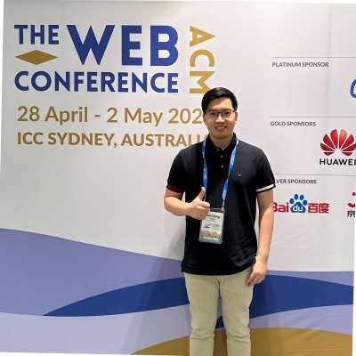

FedM²Rec
Federated Multimodal and Multi-Objective Recommendations with Security and Privacy Guarantees
: Latent Abstraction for Retrieval-Augmented Generation accepted to NeurIPS 2026.
Project Overview
FedM²Rec is a research project at VinUniversity on federated multimodal and multi-objective recommendations with security and privacy guarantees.
Publications
2026
-
NeurIPS 2026
Latent Abstraction for Retrieval-Augmented Generation
*Equal contribution
Retrieval-Augmented Generation (RAG) has become a standard approach for enhancing large language models (LLMs) with external knowledge, mitigating hallucinations, and improving factuality. However, existing systems rely on generating natural language queries at each hop and maintaining a strict architectural separation between retriever and generator, preventing them from leveraging the full representational capacity of the LLM. We propose LAnR (Latent Abstraction for RAG), a unified framework in which a single LLM jointly performs encoding, retrieval, and generation entirely within its own latent space. Rather than generating textual queries, LAnR produces dense retrieval vectors from the hidden states of a designated
[PRED]token and uses them to match against encoded document representations from the same model. Furthermore, LAnR adaptively decides when sufficient evidence has been retrieved using a lightweight MLP control head over those same hidden states, eliminating both the separate retriever and explicit token-level stopping reasoning. This design is motivated by our empirical observation that answer token entropy reliably signals retrieval sufficiency. Extensive experiments on six QA benchmarks spanning single-hop and multi-hop settings demonstrate that LAnR outperforms existing RAG methods, while achieving improved inference efficiency through reduced number of retrieval calls and tighter model integration.@misc{t2026latentabstractionretrievalaugmentedgeneration, title={Latent Abstraction for Retrieval-Augmented Generation}, author={Ha Lan N. T and Minh-Anh Nguyen and Dung D. Le}, year={2026}, eprint={2604.17866}, archivePrefix={arXiv}, primaryClass={cs.CL}, url={https://arxiv.org/abs/2604.17866}, } -
Machine Learning Journal
Enhancing Graph-based Recommendations with Majority-Voting LLM-Rerank Augmentation
*Equal contribution
Recommendation systems often suffer from data sparsity, caused by limited user-item interactions, which degrades their performance and amplifies popularity bias in real-world scenarios. This paper proposes a novel data augmentation framework that leverages Large Language Models (LLMs) and item textual descriptions to enrich interaction data. By few-shot prompting LLMs multiple times to rerank items and aggregating the results via majority voting, we generate high-confidence synthetic user-item interactions, supported by theoretical guarantees based on the concentration of measure. To effectively leverage the augmented data in the context of a graph recommendation system, we integrate it into a graph contrastive learning framework to mitigate distributional shift and alleviate popularity bias. Extensive experiments show that our method improves accuracy and reduces popularity bias, outperforming strong baselines.
@article{nguyen2026enhancing, title={Enhancing Graph-based Recommendations with Majority-Voting LLM-Rerank Augmentation}, author={Nguyen, Minh-Anh and Nguyen, Bao and Ha Lan, NT and Hoang, Tuan-Anh and Le, Duc-Trong and Le, Dung D}, journal={Machine Learning}, volume={115}, number={5}, pages={117}, year={2026}, publisher={Springer} } -
Preprint
OBC-Prune: Outcome-Based Calibration for Large Reasoning Model Pruning
Large reasoning models (LRMs) generate long chain-of-thought traces before answering, creating significant inference overhead. Pruning can reduce this cost, but its effectiveness depends on the calibration data used to estimate parameter importance. Recent work calibrates on the model's own rollouts instead of generic dataset, but treats all reasoning tokens uniformly, regardless of whether they contribute to successful reasoning. As a result, pruning protects weights by statistical salience rather than by their contribution to correct reasoning, so weights behind erroneous computation survive as readily as those behind correct computation. These erroneous patterns then get carried into the pruned model, degrading reasoning quality, producing both lower accuracy and longer reasoning traces. We propose Outcome-Based Calibration for Large Reasoning Model Pruning (OBC-Prune) to close this gap. OBC first constructs difficulty-matched pairs of correct and incorrect rollouts from problems the model answers inconsistently. It then estimates the causal importance of each reasoning sentence through intervention-based analysis, quantifying how removing its influence affects subsequent predictions. These causal importance scores are converted into per-token weights that rescale the calibration activations used by one-shot pruning methods (SparseGPT, Wanda, ALPS), without modifying the underlying pruning algorithms. Experiments on DeepSeek-R1-Distill-Qwen 1.5B, 7B, and 14B models at 40% and 50% sparsity demonstrate consistent improvements over state-of-the-art calibration baselines across most model sizes and sparsity levels on MATH500, LiveCodeBench, and AIME 2025. These results indicate that preserving causally important reasoning circuits is a substantially more effective pruning objective than uniformly preserving observed activations.
@misc{nguyen2026obcpruneoutcomebasedcalibrationlarge, title={OBC-Prune: Outcome-Based Calibration for Large Reasoning Model Pruning}, author={Ha Lan Nguyen and Huy Hoang Tran and Trac-Duy Tran and Dung D. Le}, year={2026}, eprint={2609.17890}, archivePrefix={arXiv}, primaryClass={cs.AI}, url={https://arxiv.org/abs/2609.17890}, } -
Under review (ECIR)
Towards Complementary Graph Views for Multimodal Recommendation
Graph-based multimodal recommenders increasingly exploit additional graph structures or modified propagation patterns to capture diverse preference signals. The key question, however, is whether such differences actually contribute predictive information beyond the original view, rather than reproduce what is already captured or disrupt useful collaborative evidence. We address this gap by formulating predictive complementarity, where complementarity is determined by how much a candidate view improves the recommendation objective relative to a reference view. Our analysis suggests that adaptive propagation may help a candidate view capture complementary information for preference relations that remain insufficiently captured by the reference. Based on this insight, we propose Predictive Complementarity Mask Learning (PCML), which preserves the reference propagation while learning a soft-masked candidate view and adaptively fusing it with the reference view for recommendation. Experiments on three real-world datasets show superior performance over strong state-of-the-art baselines and consistent gains across backbones, feature representations, and modality combinations. Further analyses show gains beyond capacity scaling or branch duplication, together with evidence of predictive complementarity, different behaviors across popular and niche items, and a distinct spectral profile in the learned view.
-
Under review (WWW)
Coverage-Aware Reachability Planning for Target-Driven Conversational Recommendation
Target-driven conversational recommendation requires steering multi-turn interactions toward concrete goals while adapting to unpredictable user feedback. Offline planners offer reusable guidance but assume it is always locally applicable, without tracking when a live state moves "off-map". We propose CARP (Coverage-Aware Reachability Planning), a framework that learns a goal-conditioned reachability distance over dialogue states via a Bellman objective and constructs guidance-backed planning graphs from offline experience. The learned distance provides a unified metric for weighting graph edges, retrieving relevant guidance, detecting off-map states at inference time, and scoring recovery rollouts. Building on this metric, CARP adaptively switches between shortest-path guidance precomputed on the offline graphs for covered states and value-guided rollouts for off-map states, steering the dialogue back toward regions supported by offline experience. As a planner, CARP achieves the highest success rate on TopDial and DuRecDial2.0, with the fewest turns on DuRecDial2.0 and lower inference cost than every search-based baseline, and its retrieval-only variant already outperforms every baseline on DuRecDial2.0 at one LLM call per turn. Routing rollouts by the learned distance beats both budget-matched random routing and rolling out everywhere; as a failure predictor, the distance achieves the highest average AUPRC among semantic and lexical retrieval representations on dialogues of eight planners.
-
Under review (ACL RR)
To Reason but Not to Stop: Understanding and Recovering Pruned Large Reasoning Models
Weight pruning can degrade the accuracy of large reasoning models (LRMs), yet it remains unclear whether it damages reasoning itself. We find that much of this degradation stems from a failure to stop rather than to reason. As sparsity increases, pruned LRMs increasingly fail to terminate within the token budget, often after the correct answer has appeared in their reasoning, instead falling into repetitive loops, even though they still recognize where the dense model would stop. We further find that the hidden-state difference between terminating and looping continuations is consistent across pruned checkpoints, suggesting a shared direction associated with committing to an answer. Building on this, we propose Termination-Guided Activation Steering (TGAS), a training-free method that adds this direction to the residual stream at inference time. Across six LRMs, three pruning pipelines, and math and code benchmarks, TGAS improves termination and overall accuracy while reducing repetitive reasoning and generation length, showing that this failure is actionable.
@misc{nguyen2026reasonstopunderstandingrecovering, title={To Reason but Not to Stop: Understanding and Recovering Pruned Large Reasoning Models}, author={Minh-Anh Nguyen and Nguyen T. Ha Lan and Xiyan Fu and Dung D. Le and Wei Lu}, year={2026}, eprint={2610.19934}, archivePrefix={arXiv}, primaryClass={cs.CL}, url={https://arxiv.org/abs/2610.19934}, }
Team Members
Principal Investigators

Project PI
Members
MSc CS Student @ VinUni
MSc CS Student @ VinUni
MSc CS Student @ VinUni
Collaborators
Johns Hopkins University
NTU
NTU
SMU
VNU
RMIT Vietnam University

PhD Student @ UTS
PhD Student @ NTU
MSc CS Student @ VinUni
PhD Student @ CUHK